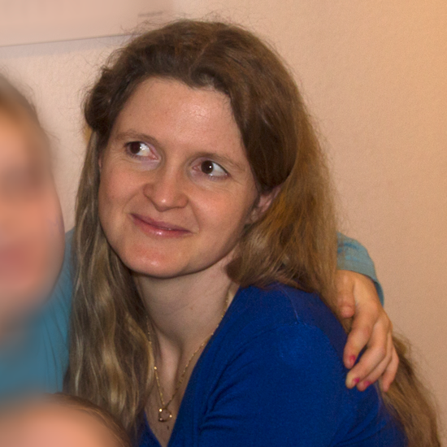

Annrita Egli
Carmelo Schumacher
Regarding the paper
Kort was developed as a part of the bachelor thesis by Jürg Hunziker and Stefan Oberbolz in computer science at the HSR University of applied sciences. Further improvements and new features were implemented in connection with a term paper by Annrita Egli and Carmelo Schumacher.
- Tutor:
- Prof Stefan Keller, Institute for Software (IFS)
- Additional thanks to:
- Reto Senn, bitforge AG
- René Bauer, gamelab ZHdK
- Harald Kleiner, KeepRight
- Made possible by:
- OpenStreetMap
- Heroku
- Travis CI
- Sencha Touch
- Leaflet

Acknowledgements
Special thanks go out to the many volunteers, which have made significant contributions and still do:
- Beta testers of the app
- Mappers at OpenStreetMap
- Translators of Transifex
- Everyone that has given us feedback, via UserVoice or GitHub
- All people that helped spread knowledge about Kort, be it personally, by mail, twitter, blogs, forumposts or any other form of communication.
- Last but not least: Every single player of Kort, thanks to you we can improve OpenStreetMap every day- you rock!